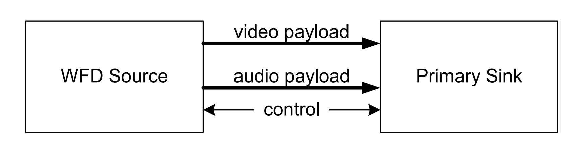
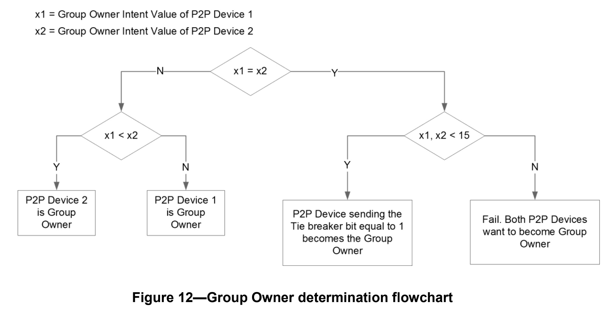
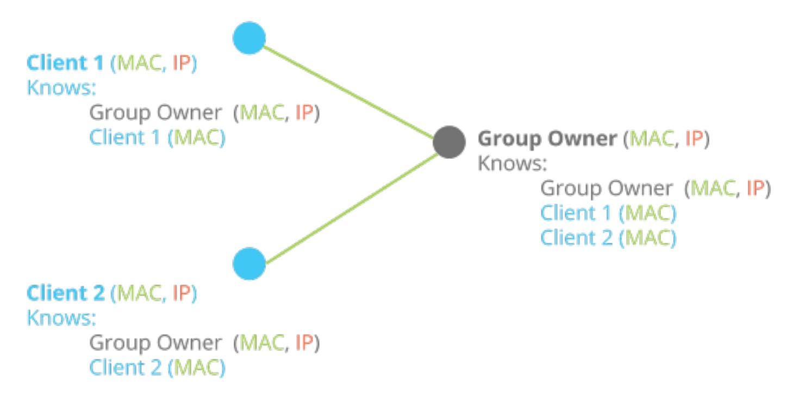

Miracast概述
Miracast
Miracast是由Wi-Fi联盟于2012年所制定，以Wi-Fi直连（Wi-Fi Direct）为基础的无线显示标准。支持此标准的消费性电子产品（又称3C设备）可透过无线方式分享视频画面，例如手机可透过Miracast将影片或照片直接在电视或其他设备播放而无需任何连接线，也不需透过无线热点（AP，Access Point）。
Wi-Fi Direct
Wi-Fi直连（英语：Wi-Fi Direct），之前曾被称为Wi-Fi点对点（Wi-Fi Peer-to-Peer），是一套无线网络互连协议，让wifi设备可以不必透过无线网络接入点（Access Point），以点对点的方式，直接与另一个wifi设备连线，进行高速数据传输。这个协议由Wi-Fi联盟发展、支持与授与认证，通过认证的产品将可获得Wi-Fi CERTIFIED Wi-Fi Direct®标志。
Wi-Fi Display
Wi-Fi Display是Wi-Fi联盟制定的一个标准协议，它结合了Wi-Fi标准和H.264视频编码技术。利用这种技术，消费者可以从一个移动设备将音视频内容实时镜像到大型屏幕，随时、随地、在各种设备之间可靠地传输和观看内容。
Miracast实际上就是Wi-Fi联盟对支持WiFi Display功能的设备的认证名称，产品通过认证后会打上Miracast标签。
Sink & Source
如下图所示，Miracast可分为发送端与接收端。Source端为Miracast音视频数据发送端，负责音视频数据的采集、编码及发送。而Sink端为Miracast业务的接收端，负责接收Source端的音视频码流并解码显示，其中通过Wi-Fi Direct技术进行连接。

Android上Wi-Fi Direct的实现
上面的概述里面也说到，Miracast是基于Wi-Fi Direct技术来实现连接与数据传输。那么要实现Miracast技术，首先就得研究下Android平台下的Wi-Fi Direct技术。
Wi-Fi P2P 服务发现
Wi-Fi Direct（在Android平台上也称Wi-Fi P2P）,可以让具备相应硬件的Android 4.0（API 级别 14）或更高版本设备在没有AP的情况下，通过WLAN进行直接互联，主要的调用集中在WifiP2pManager这个类中。
设置应用权限
首先在Manifest中加入以下权限，因为在P2P传输数据的时候会使用到Socket进行C/S连接，因此需要使用到INTERNET权限。
1 | <uses-permission android:name="android.permission.ACCESS_FINE_LOCATION"/> |
初始化WifiP2pManager
获取系统P2P服务WifiP2pManager的实例，并通过调用initialize()获取Channel实例，后面绝大多数api的调用都将使用到mManager和mChannel。
1 | mManager = (WifiP2pManager) context.getSystemService(Context.WIFI_P2P_SERVICE); |
这里要注意，若系统WiFi没有开启的情况下，需要先调用WiFiManager的setWifiEnabled()方法手动开启WiFi：
1 | mWifiManager = (WifiManager) context.getSystemService(Context.WIFI_SERVICE); |
接收关键广播
创建广播接收器接收以下关键广播，在P2P连接期间各种设备与连接状态的变化都会通过以下广播进行通知。对于每个Action的意义及处理详见以下注释：
1 | public class WiFiDirectReceiver extends BroadcastReceiver implements WifiP2pManager.PeerListListener { |
发现对等设备
当初始化完WifiP2pManager后，我们就可以开始设备的发现了。通过discoverPeers()和stopPeerDiscovery()方法，可以完成设备发现的启动与停止。注意这两个方法会立即返回，并在对应的ActionListener中回调成功与否的通知。
1 | mManager.discoverPeers(mChannel, new WifiP2pManager.ActionListener() { |
在调用discoverPeers()方法后，我们还获取不到任何对等设备的信息。此时若成功检测到对等设备，则系统会发送WIFI_P2P_PEERS_CHANGED_ACTION广播，此时我们通过requestPeers()方法即可获取到对等设备的列表，详见上述WiFiDirectReceiver代码。
设置WifiP2pWfdInfo
这是Miracast服务发现中最重要的一步，我们需要调用setWFDInfo()方法启动WFD，这样在发送端才能搜索到此设备。
其中WifiP2pWfdInfo类与setWFDInfo()方法都是@hide的，在标准的sdk中无法直接进行访问。
针对WifiP2pWfdInfo类，因为它没有太多依赖，我们可以直接从源码中拷贝一份出来，放在android.net.wifi.p2p包下：
1 | /** |
对于setWFDInfo()方法，我们可以采用反射的方式进行调用：
1 | private void setWFDInfoInner(WifiP2pWfdInfo wfdInfo) { |
初始化WifiP2pWfdInfo，并进行如下设置，重要的几个字段详见注释：
1 | public void setWfdInfo() { |
若希望关闭WiFi Display模式，则直接setWfdEnabled(false)即可：
1 | public void clearWfdInfo() { |
完成上述步骤后，在发送端的投屏或者投射功能中，应该能搜索到对应的Miracast设备了。
Wi-Fi P2P 连接
在发送端搜索到Miracast设备，并点击对应设备后，就进入到了连接过程。此时Sink端应该会弹出一个[连接邀请]的授权窗口，可以选择拒绝或者接受。选择接受后，若是第一次连接，则会进入到GO协商的过程。
GO协商（Group Owner Negotiation）
GO协商是一个复杂的过程，共包含三个类型的Action帧：GO Req、GO Resp、GO Confirm，经过这几个帧的交互最终确认是Sink端还是Source端作为Group Owner，因此谁做GO是不确定的。那具体的协商规则是怎样的呢？官方的流程图清晰地给出了答案：

首先通过Group Owner Intent的值进行协商，值大者为GO。若Intent值相同就需要判断Req帧中Tie breaker位，置1者为GO。若2台设备都设置了Intent为最大值，都希望能成为GO，则这次协商失败。
那么，如何设置这个Intent值呢？发送端在connect()的时候，可通过groupOwnerIntent字段设置GO的优先级的（范围从0-15，0表示最小优先级），方法如下：
1 | WifiP2pConfig config = new WifiP2pConfig(); |
PS: 对GO完整协商过程感兴趣的童鞋可以查看
Wi-Fi P2P Technical Specification文档的3.1.4.2 Group Owner Negotiation这章
Miracast Sink端的场景为接收端，因此不能通过groupOwnerIntent字段来设置GO优先级。那么还有其他方式可以让Sink端成为GO吗？毕竟在多台设备通过Miracast投屏的时候，Sink端是必须作为GO才能实现的。答案其实也很简单，就是自己创建一个组，自己成为GO，让其他Client加进来，在连接前直接调用createGroup()方法即可完成建组操作：
1 | mManager.createGroup(mChannel, new WifiP2pManager.ActionListener() { |
建组成功后我们可以通过requestGroupInfo()方法来查看组的基本信息，以及组内Client的情况：
1 | mManager.requestGroupInfo(mChannel, wifiP2pGroup -> { |
GO协商完毕，并且Wi-Fi Direct连接成功的时候，我们将会收到WIFI_P2P_CONNECTION_CHANGED_ACTION这个广播，此时我们可以调用 requestConnectionInfo()，并在onConnectionInfoAvailable()回调中通过isGroupOwner字段来判断当前设备是Group Owner，还是Peer。通过groupOwnerAddress，我们可以很方便的获取到Group Owner的IP地址。
1 |
|
受WiFi P2P API的限制，各设备获取到的MAC和IP地址情况如下图所示：

由于在后续RTSP进行指令通讯的时候，需要通过Socket与Source端建立连接，也就是我们需要先知道Source端的IP地址与端口。根据上图，我们可能出现以下2种情况：
- 情况1：Sink端为Peer，Source端为GO。
这种情况下，Sink端知道Source端（GO）的IP地址，可以直接进行Socket连接。
- 情况2：Sink端为GO，Source端为Peer。
这种情况下，Sink端只知道自己（GO）的IP地址，不知道Source端（Peer）的IP地址，但此时能获取到MAC地址。
通过ARP协议获取对应MAC设备的IP地址
针对上述情况2，我们需要通过MAC地址获取到对应主机的IP地址，以完成与Source端的Socket连接，比较经典的方案是采用解析ARP缓存表的形式进行。
ARP（Address Resolution Protocol），即地址解析协议，是根据IP地址获取物理地址的一个TCP/IP协议。主机发送信息时将包含目标IP地址的ARP请求广播到局域网络上的所有主机，并接收返回消息，以此确定目标的物理地址；收到返回消息后将该IP地址和物理地址存入本机ARP缓存中并保留一定时间，下次请求时直接查询ARP缓存以节约资源。
在Android上，我们可以通过以下指令获取ARP缓存表：
方法1：通过busybox arp指令
1
2
3dior:/ $ busybox arp
? (192.168.0.108) at f8:ff:c2:10:e7:62 [ether] on wlan0
? (192.168.0.1) at 9c:a6:15:d6:e8:f4 [ether] on wlan0方法2：通过cat proc/net/arp命令
1
2
3
4dior:/ $ cat proc/net/arp
IP address HW type Flags HW address Mask Device
192.168.0.108 0x1 0x2 f8:ff:c2:10:e7:62 * wlan0
192.168.0.1 0x1 0x2 9c:a6:15:d6:e8:f4 * wlan0
剩下的工作就是采用强大的正则表达式解析返回的字符串，并查找出对应MAC设备的IP地址了。
获取Source端RTSP端口号
经过上面的步骤，我们已经拿到了Source端的IP地址，只剩下端口号了。这一步就比较简单了，通过requestPeers()方法获取已连接的对等设备WifiP2pDevice，再获取其中的WifiP2pWfdInfo即可拿到端口号：
1 | mManager.requestPeers(mChannel, peers -> { |
这里由于WifiP2pDevice中的wfdInfo字段为@hide，因此需要通过反射的方式获取WifiP2pWfdInfo。最后通过getControlPort()方法即可拿到Source端RTSP端口号：
1 | public int getDevicePort(WifiP2pDevice device) { |
拿到了Source端的IP地址与端口号后，我们就可以建立RTSP连接，建立后续控制指令的通道了，详见下篇博客。